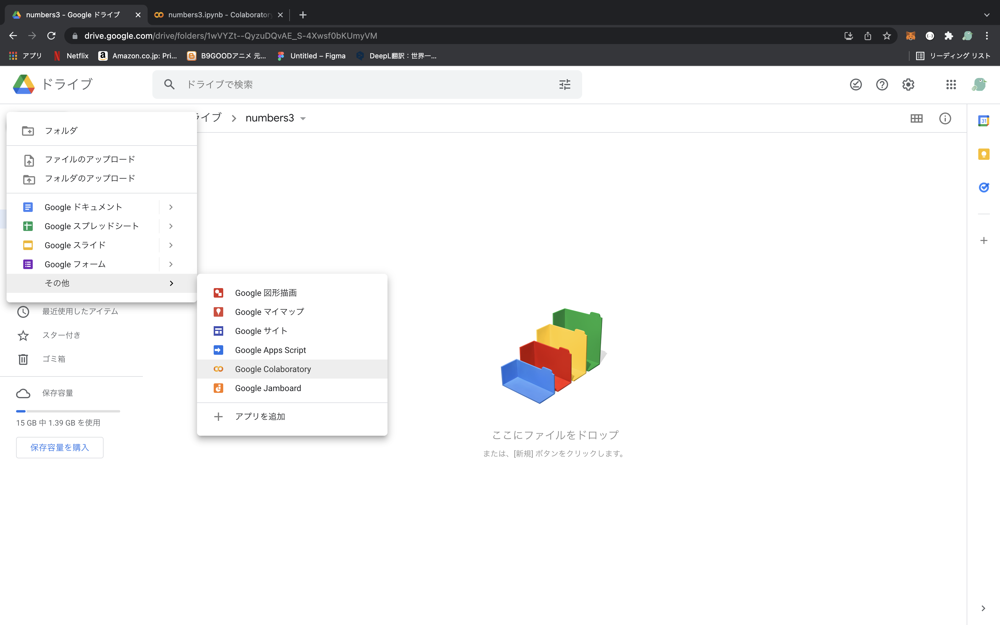
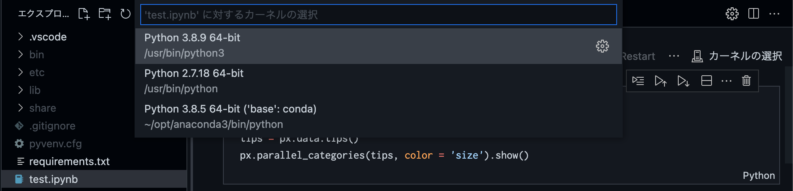
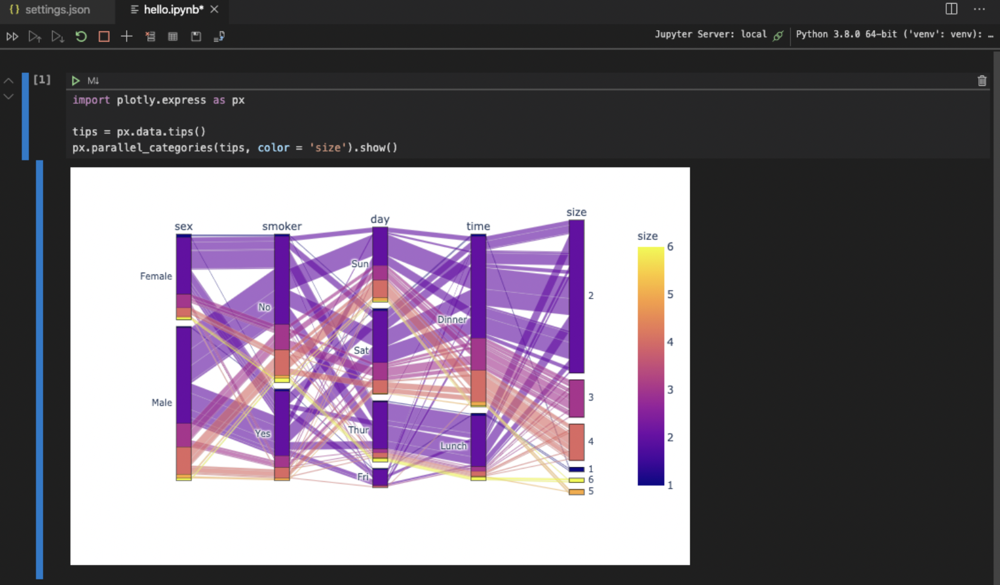

python環境
google colaboratory
pysonを環境構築なしで使用できるツール
google colaboratoryとは
youtube_キノコード / プログラミング学習チャンネル
jupyter notebook with vs code
jupyter notebook を vscodeで使用する方法
virtualenvをインストールする
似たようなライブラリがたくさんあるけどvirtualenvが使い易い
gitignoreの設定が最初からされている
# 初回のみ
pip install virtualenv
仮想環境に入るためのファイルを作成
# プロジェクト名はない方が扱いやすい
virtualenv (プロジェクト名)
# or
virtualenv .
# or (pythonのバージョンを指定して作成)
virtualenv -p python3.9 venv39
仮想環境に入る
source bin/activate
仮想環境に入った状態でpip install (ライブラリ)で環境が分離される
仮想環境から出る
deactivate
Jupyterのパッケージをインストール
pip install jupyter
pip install pandas lxml plotly-express
パッケージをインストール後はrequirements.txtに書き出す
git clone 後に、簡単にパッケージをインストールするために必要
pip freeze > requirements.txt
設定ファイルを追加する
.vscode/settings.jsonファイルを作成し、内容を以下の通りにする
{
// PythonのPATHをワークスペースの仮想環境にする
"python.pythonPath" : "${workspaceFolder}/venv/bin/python",
// 仮想環境にインストールしたファイルは監視対象から除外する
"files.watcherExclude" : {
"**/venv/**" : true
}
}
ファイルを作成する
hello.ipynbファイルを作成する
import plotly.express as px
tips = px.data.tips()
px.parallel_categories(tips, color = 'size').show()
実行する
実行時の選択肢は現在のプロジェクトを選択
結果
git clone 後の処理
virtualenvを作成
virtualenv .
バーチャル環境に入る
source bin/activate
requirement.txtからpipでパッケージを入れる
pip install -r requirements.txt
jupyter notebook in vscode で実行する場合はカーネルを選択を”venv(仮想環境名)”に変更